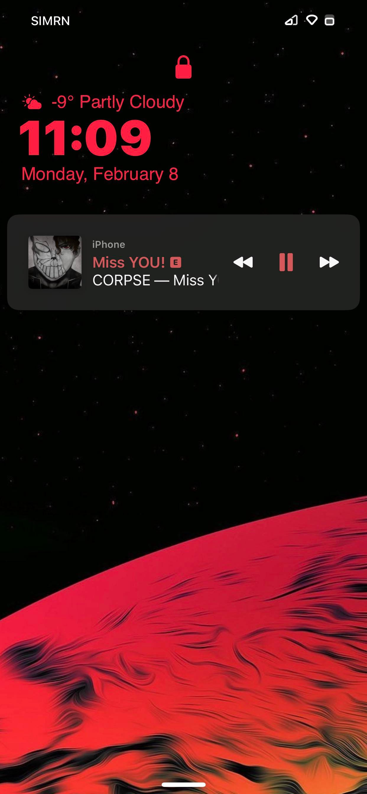
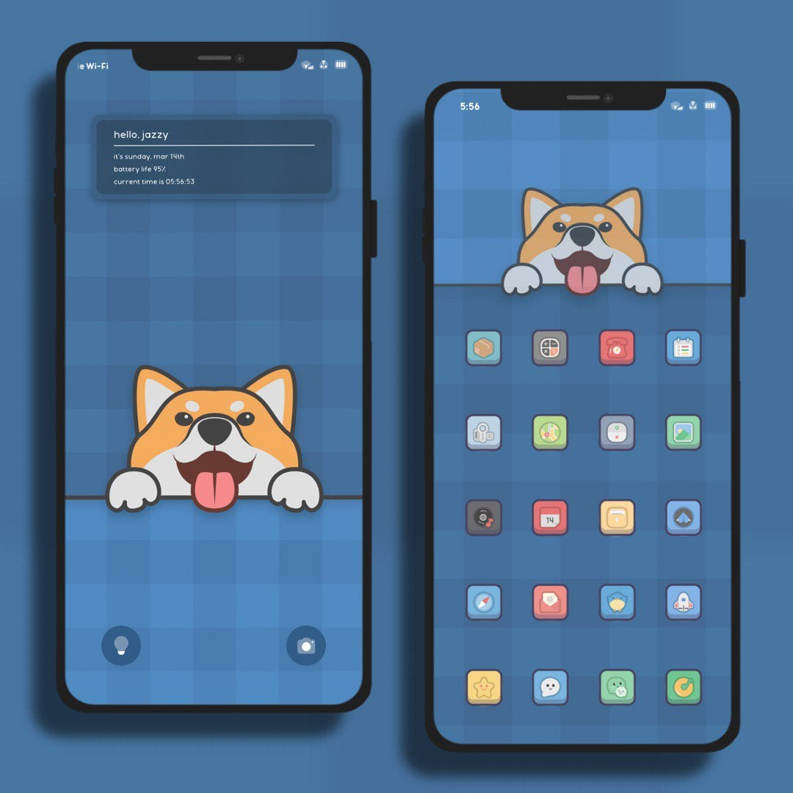
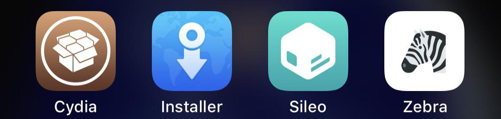
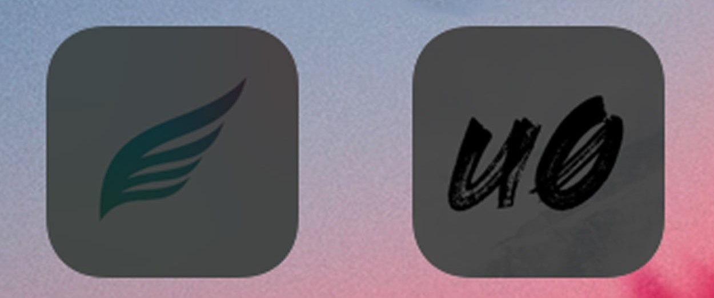

Jailbreak is not very knowed in the android or other communities but is a very knowed by tech savy people in the IOS community. Many poeple use Jailbreak as a way to use 3rd party apps not verified by Apple or just as a way to customize their IDevices. Main purpose of the website is to explain and understand why Apple's why motive on jailbreak and how jailbreak became a very popular 'hobby' on the IOS community. Apple's infamously by doing questionable (say the least) actions towards people or companies that 'violated' Apple's terms of service; from Apple's towards Corellium lawsuit to the Epic Games on Apple's monopoly on the App Store lawsuit. But there's a part, a community that Apple is actively wants to stop that HELPS Apple by:
Find hidden exploids and bugs
Saving them thousands of dollars and dozens of manpower and hours for looking for hidden IOS breaking exploids
For any developers founds any exploids can get up to $1,000,000 in their security bounty program; which this amount can REALLY help the devs and gives a reason to find exploids
Multiple times Apple 'copied' tweaks from jailbreak to add natively to IOS
But if Apple gets a foot hold to (in the slight chance) to influence the goverment to remove the exemption from Jailbreaking in the Digital Milennium Copyright Act, they can:
Make jailbreaking ILLEGAL in the US, AGAIN
Having a jailbroken device can make you a CRIMINAL and could get you up to years in JAIL
Destroying a whole community dedicated in custumizing their phone to their hearts content
What's Jailbreak / Jailbreaking?
Jailbreaking or known as Jailbreak (in IOS) is a privilage escalation for Apple's IOS supported devices like IPhone, IPad, IPod and Apple TV; or in simple terms, is breaking the constrains of Apple's IOS and able to modify your IDevice how ever you desire (if you know and have previous knowledge on programming on a IOS enviroment).


Two custom IPhones, a IPhone 11 Pro Max and a IPhone 11 running a custom Themes which is only possible on a jailbreak. Both them are great examples of the possibilities of jailbreak.
Repos and Tweaks
Repo's are servers hosted by tweaks creators or group of people that creates repos for tweak creators to add their tweaks on, some of the most popular ones are: Bigboss, Chariz, Dynastic and Packix.
Tweaks are like a package (almost like when one downloads apps on the Appstore) where the custom modifications is packed and easily able to install using a package manager, these are compiled by tweak coders using Apple's Swift engine. Mostly all popular tweaks like JellyFish, Shortcut, Snowboard (a theming engine) and many more are stored on online Repos.
Unauthorized 3rd Party Apps
Unauthorized 3rd Party Apps in basic terms, Apps signed to use (apps able to launch by the user) by 3rd party sign services, applications like Altstore and others paid ones. These services can be used for installing custom apps onto your device; but most popular custom apps ar being installed are mostly pirating applications; Which is one problem in the jailbreak community.
Package Manager
A Package Manager is how the device talks to repos and displays the avalible tweaks, apps and themes without using the device command prompt. There's quite a selection in todays age, but the oldest and first most popular package manager was Cydia (which is still being maintain today); but now there's many like Sileo (only avalible for Taurine jailbreak), Zebra, Installer 4 and a couple smaller ones.

How do you run a jailbreak?
A jailbreak isn't just one application, run it and 'voila'; In most jailbreaks, there's multiple jailbreak 'providers' created by different grouo of developers (most of the time). Recently the two jailbreak dominating in the IOS 13-14, are the Unc0ver jailbreak works on IOS 14.3 and below, while Taurine works on IOS 14.3 and below (older versions are called Chimera for IOS 13).
Two years ago, a new Jailbreak got release called Checkm8 where it uses a high level access (from bootup) on IOS phones to inject the jailbreak code but the best thing is how many time Apple try to patch it, they can't patch this because it's an hardware exploit. While it's great for the community this level of jailbreak, the only catch is that only works on older generation idevices from the A7 chips to A11 (or from the IPhone 5S to the IPhone X).
Both jailbreak have different opinions on people on the jailbreak's stability, battery life with it; It truly depends on what your experience on when you install and test them. Personally I like unc0ver because for me it feels more reliable in stability than Chimera.

Taurine (Shown is the Chimera logo) on the left, Unc0ver on the middle and Checkm8 on the right.
What's DMCA?
Digital Milennium Copyright Act or knowed as DMCA is a official law written and approved in the 1998 Bill Clinton administration. The law since then shaped how we use and destribute every type of sold -able content in the market.
The creation of the DMCA law, IOS jailbreak was ILLEGAL years until 2010 where the law was altered to add an exemption where now is LEGAL.
Like mention before, Apple does have a security program where security and app coders can submit any software-breaching exploids or loops where can be used for either a new Jailbreak or more malicious intent.
For more information on both the DMCA and Apple's security bounty program:
Here's two videos about Jailbreaking: left is showcase some popular tweaks current JB while the right shows a basic understanding on what's a JB and how to install it:
If you'll like some more recommendations about Jailbreaking, please check the "More Jailbreak Videos" section of the website!
Conclusion
After writing on how to structure the website, personal research, and finally finishing the website; I've learn that Apple as much as I personally like their products (but I am not defending the total blizzard Apple "tax" on their products),
I can't defend they by trying to indirectly 'shadow-banning' communities like the Jailbreak community until they can literally erasing it. Personally these 'fan' communities can be great for them in many aspects like being a great tool for their OS and as a 'platform' to see features on the Jailbreak community to bring it into a real staple IOS features.